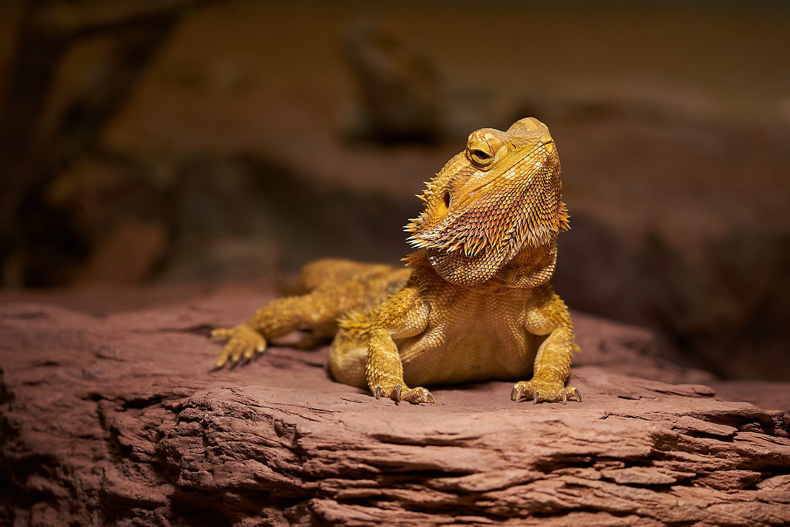
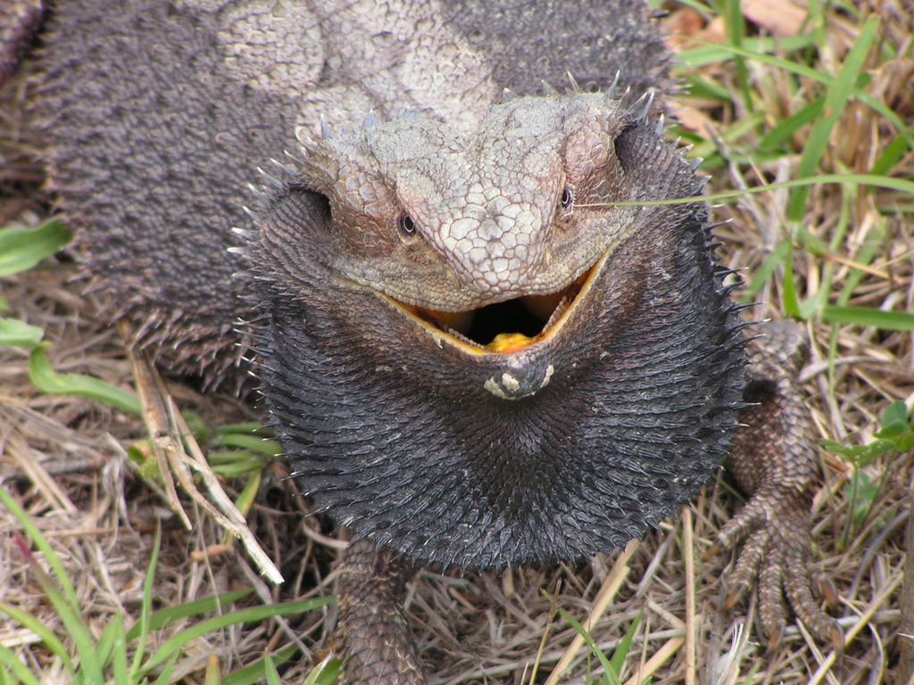
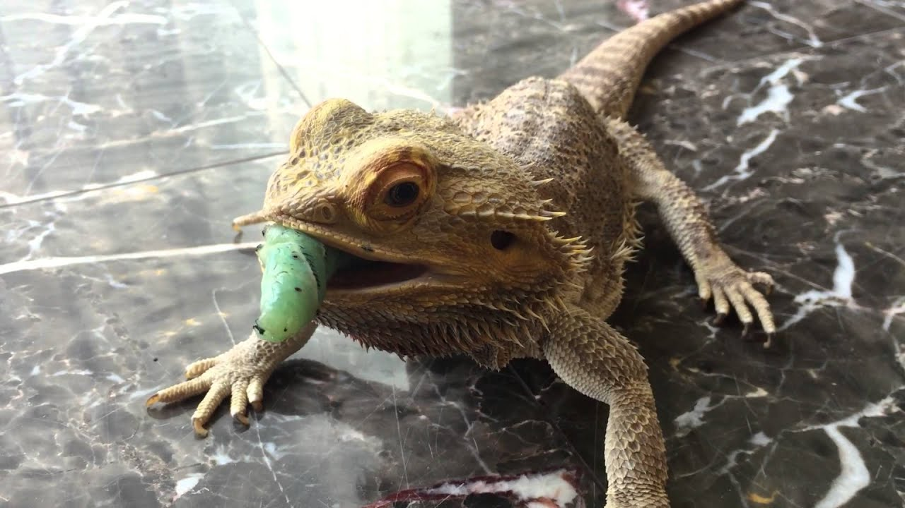
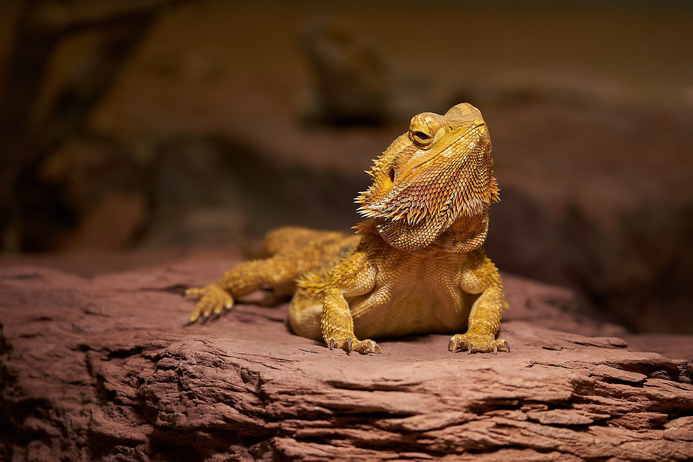
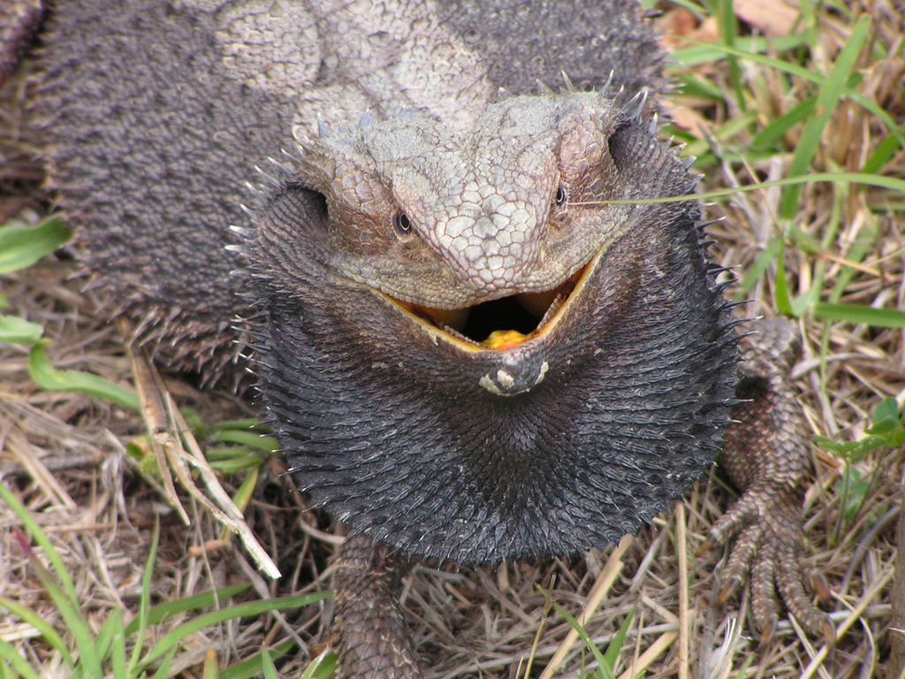
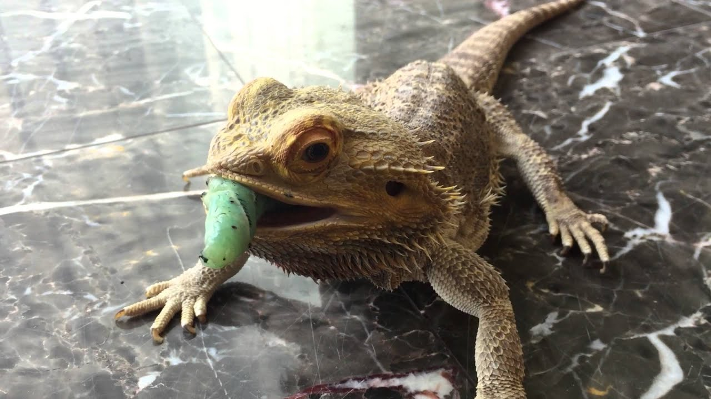
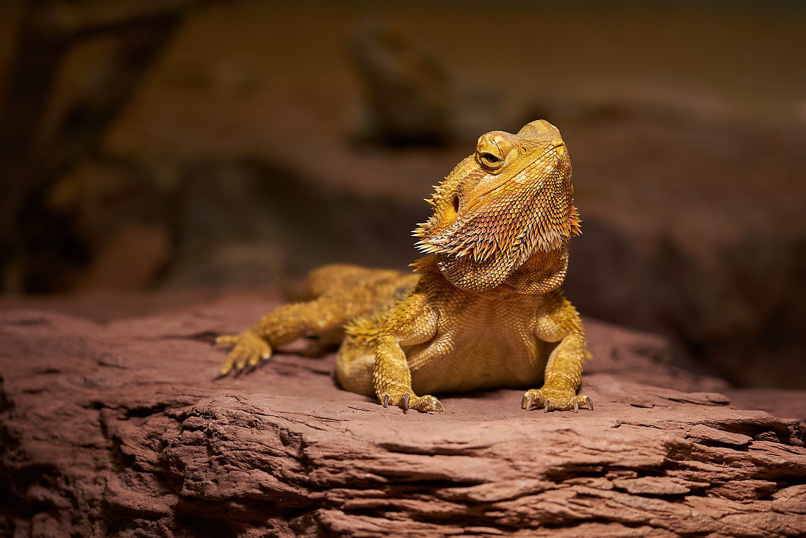
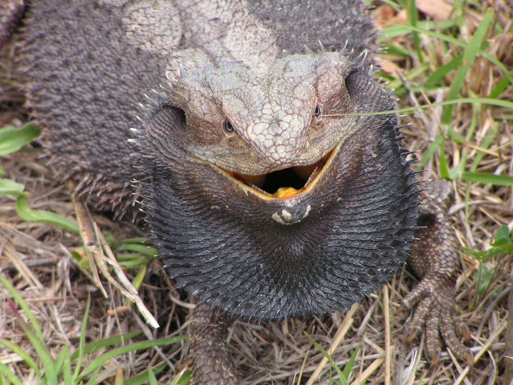
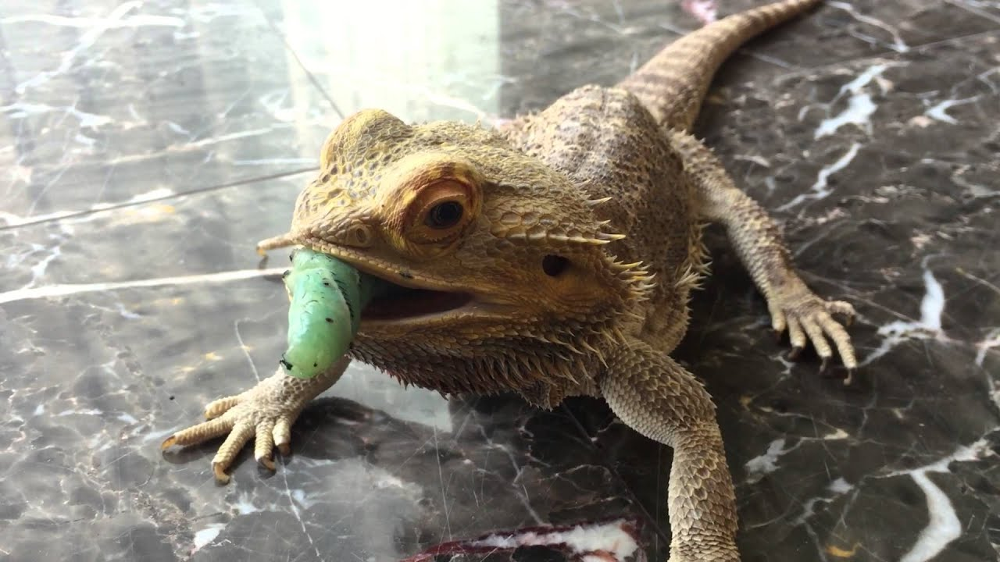
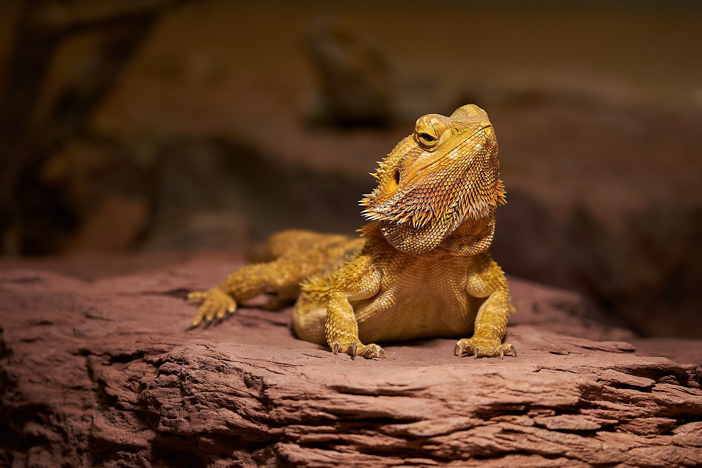
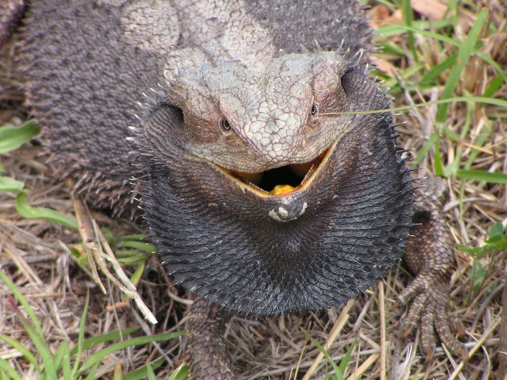
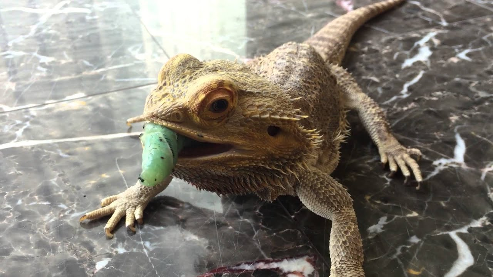
The bearded dragon lives up to its name: Like a dragon, it’s equipped with armor of spiny reptilian
scales, which include a “beard” of spikes under its chin that puffs up depending on its mood. There
are eight species species of bearded dragons recognized today, all of which are affectionately
called “beardies.”
Among the most popular pet reptiles, bearded dragons tend to be gentle, inquisitive, and active
during the day. The central bearded dragon, Pogona vitticeps, is the most common species to have as
a pet.
In the wild, bearded dragons’ range extends across most of Australia. They typically prefer to stick
to warm, arid areas: deserts, subtropical woodlands, savannas, and scrublands. In the 1960s,
Australia banned the export of wild bearded dragons; however, they’ve been bred in the United States
for decades for the pet trade, and they come in a variety of color “morphs” not commonly found in
the wild.
A warm habitat is crucial for bearded dragons. They’re cold-blooded and rely on external heat
sources to raise their body temperature, which varies according to the temperature of their
environment. They bask in the sun to warm themselves and can burrow underground to avoid extreme
heat and predators. They’re semi-arboreal and often can be found on fence posts and tree branches.
Bearded dragons are not picky eaters. With their strong jaws, they can clench and crush
hard-shelled insects like beetles. As omnivores, they’ll also go for leaves, flowers, fruit, and the
occasional small lizard or rodent.
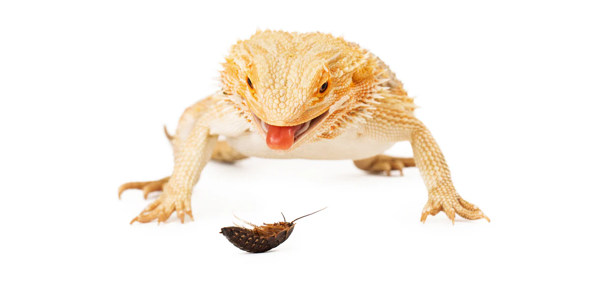
Known for being territorial, adult bearded dragons may display their aggression to defend their turf
from other males, fight for food, or compete for a female. Some males may also attack females if
they don’t show submissive behavior.
The beard, which both males and females have, is an important way the lizards communicate. When
threatened, a bearded dragon will open its mouth, raise its chin, and puff out its beard to make
itself appear bigger. This display may also be accompanied by a hiss.
Bearded dragons also communicate by changing the color of their beards and bobbing their heads. A
quick head bob may signal dominance, whereas a slow bob and an arm wave is a sign of submission.
With a change of seasons, some bearded dragons may go through brumation, a type of hibernation, in
which they stop eating and only drink water sporadically. This dormant phase usually occurs in the
fall or winter as the light changes and temperatures drop.
With proper care, bearded dragons can live for 8 to 12 years in captivity. Common health problems include metabolic bone disease, respiratory infections, and parasites. Regular veterinary care and proper husbandry practices can help prevent these issues.
To catch the attention of a female, a male bearded dragon embarks on a showy ritual of courtship,
pounding his feet into the ground and waving his arms and bobbing his head. The male will pursue the
female and bite the back of her neck when mating.
Female bearded dragons are believed to have the unusual capacity to store sperm, which enables some
to lay two separate clutches of 11 to 30 eggs from a single mating.
The sex of bearded dragon embryos can be changed by the incubation temperature. If the temperature
is unusually high while embryos with male chromosomes are developing, they will instead develop as
females. Warmer temperatures during development also make bearded dragons slower learners.
Bearded dragons were first described scientifically in the early 20th century. The central bearded
dragon, Pogona vitticeps, was described by German zoologist Ernst Ahl in 1926.
The bearded dragon belongs to the genus Pogona, which includes several species. They are part of the
Agamidae family, which encompasses a diverse group of lizards found in various parts of the world.
1960s-1970s: Bearded dragons began to be recognized for their calm demeanor and relatively
easy care
compared to other reptiles, making them suitable pets. However, they were not widely available
outside of Australia due to strict export laws.
1980s: Bearded dragons were introduced to the international pet trade, particularly in the
United
States and Europe, after captive breeding programs were established. These programs helped reduce
the need for wild-caught specimens and contributed to their popularity as pets.
1990s-Present: Bearded dragons have become one of the most popular reptile pets worldwide. Their docile nature, ease of care, and interactive behaviors make them a favorite among reptile enthusiasts. They are also relatively hardy, adaptable, and have a longer lifespan compared to many other reptile species.
Bearded dragons have been subjects of various behavioral studies due to their unique social
behaviors, including arm waving, head bobbing, and beard puffing. Researchers study these behaviors
to understand reptilian communication and social structures.
Scientists have also used bearded dragons to study thermoregulation, metabolism, and reproduction in
reptiles. Their ability to thrive in a range of temperatures and their oviparous nature (egg-laying)
make them suitable for these studies.
Bearded dragons frequently appear in educational programs, documentaries, and media aimed at promoting reptile conservation and education. Their approachable appearance and interesting behaviors make them excellent ambassadors for reptile awareness.
 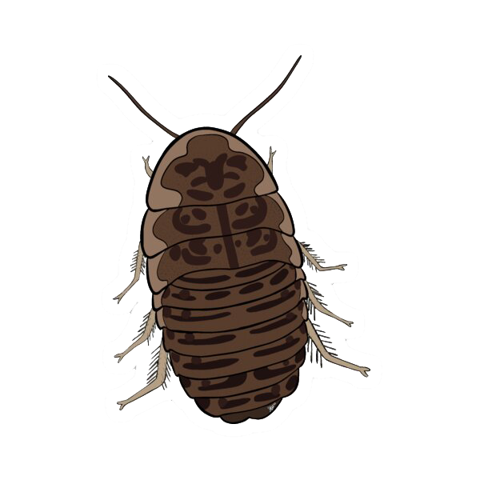
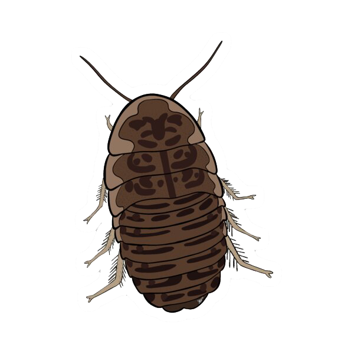
Tank Size: For an adult bearded dragon, a tank of at least 40-50 gallons is recommended.
Larger tanks (75-120 gallons) are even better for giving them ample space.
Substrate: Use reptile carpet, paper towels, or tile. Avoid loose substrates like sand, as
they can cause impaction if ingested.
Temperature and Lighting:
Basking Spot: Maintain a basking spot temperature of 95-110°F.
Cool Side: The cooler side of the tank should be around 75-85°F.
Night Time: Keep temperatures between 65-75°F at night.
UVB Lighting: Provide UVB light for 10-12 hours a day to help with calcium absorption and
prevent metabolic bone disease. Replace the UVB bulb every 6-12 months.
Insects: : Offer a variety of insects like crickets, dubia roaches, and mealworms. Younger
dragons require more protein, so feed them insects daily.
Vegetables: Provide leafy greens such as collard greens, mustard greens, and dandelion
greens. Other vegetables like squash and bell peppers can also be included.
Fruits: Offer fruits like blueberries, strawberries, and apples occasionally as treats.
Supplements: Dust insects with calcium powder 3-5 times a week and a multivitamin powder once
a week.
Regular Check-Ups: Schedule annual vet visits to monitor health and address any issues.
Signs of Illness: Watch for signs like lethargy, lack of appetite, abnormal feces, swollen
limbs, or respiratory distress. Promptly consult a vet if these occur.
Shedding: Bearded dragons shed their skin as they grow. Ensure they have rough surfaces in
the tank to help them shed properly.
Acclimation: Allow your bearded dragon to acclimate to its new environment before handling.
Gentle Handling: Always handle them gently and support their body. Avoid grabbing them from
above as this can cause stress.
Regular Interaction: Regular, gentle interaction helps build trust and keeps them socialized.
Daily: Spot-clean the enclosure, removing any waste or uneaten food.
Weekly: Clean food and water dishes.
Monthly: Deep-clean the enclosure, replacing substrate and disinfecting all surfaces.
Beard: While human beards might be fashion statements, bearded dragons use their beards to communicate. When threatened, bearded dragons puff out their beards to appear larger to predators. Their beard color changes too, switching from white to black while socializing. Learn more about its beard? [CLICK HERE]
Eyes: Bearded Dragons have three eyes, their two primary eyes see images, just like our eyes. Their parietal eye, located on the top of their head, doesn’t see images but is an optical lobe on the top of their head that can sense shadows and changes in light. Learn more about its eye? [CLICK HERE]
Body Scales: Bearded dragons are equipped with an armor of spiny scales that can make them difficult for predators to eat. Learn more about its body scales? [CLICK HERE]
Shedding: Bearded Dragons will shed due to either growth or replacing damaged skin. Bearded Dragons shedding due to growth. Learn more about its growth? [CLICK HERE]